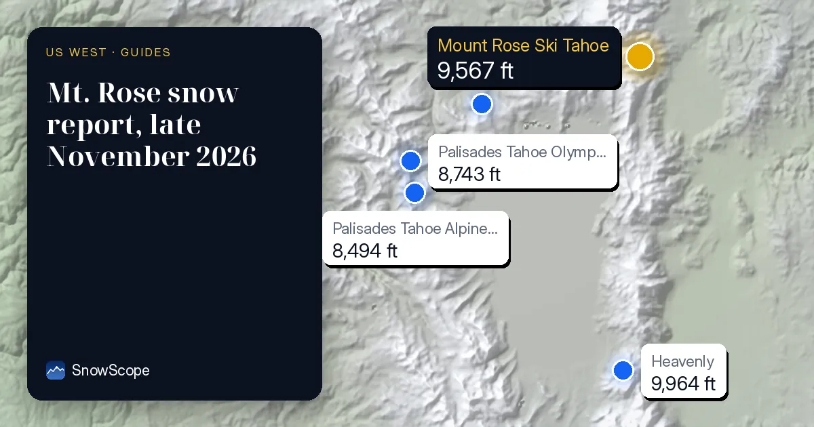
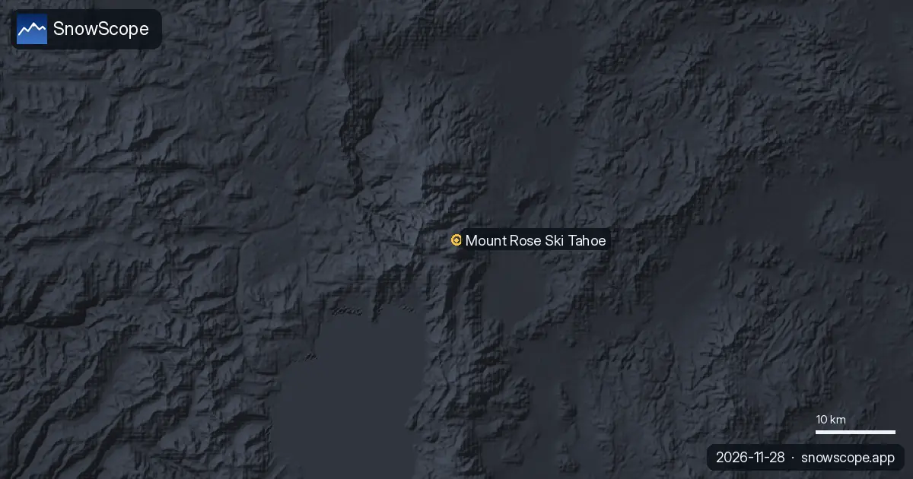
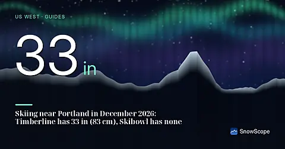
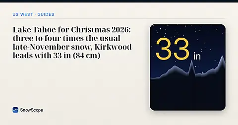

Mt. Rose snow report, late November 2026: 35 in (88 cm) on Reno's own mountain, three times a normal start
Mt. Rose, half an hour above Reno on the Nevada side of the Tahoe rim, has 35 in (88 cm) of snow on its upper slopes this Saturday. At 8,573 ft (2,613 m) the pack is 22 in (55 cm), where a usual 28 November has 7 in (18 cm). The last storm was over a week ago, so this is settled, cold snow, and the next system arrives on Monday night.
See the live snow forecast for Mount Rose Ski Tahoe in the SnowScope appSnow depth, powder alerts and the 3D map, free.

The highest base around Tahoe
Mt. Rose's lifts start at 7,579 ft (2,310 m), higher than any other resort on the lake, and reach 9,567 ft (2,916 m) on Slide Mountain. That height is why the hill keeps snow when the lower Tahoe resorts turn to rain, and why its start is often the earliest on the Nevada side. Nothing has fallen in the last three days; the week's total is 0 in (1 cm).
On the lake shore below, Diamond Peak at Incline Village has 29 in (73 cm) on its upper runs and 13 in (33 cm) at 7,628 ft (2,325 m), also far above its usual 3 in (8 cm).
What is coming
Monday brings about 3 in (7 cm) and Tuesday another 4 in (11 cm): 7 in (19 cm) by Tuesday evening, 7 in (18 cm) at the top over seven days. That is a moderate Sierra storm, not a big one, and after a cold week the new snow should fall on a firm, consistent base.
The timing suits locals more than visitors: the fresh snow lands midweek, after the holiday weekend has emptied out.
How unusual is this?
Snow lay on the ground at 8,573 ft (2,613 m) on 28 November in 85% of past winters, but rarely this much: only one winter in ten had more than 4 ft (123 cm) on the date. A usual 15 December has 29 in (73 cm) and a usual Christmas Day 33 in (84 cm), so the mountain is already past its normal Christmas level.
The snowiest weeks of a normal Mt. Rose winter come in the second half of the season; a usual 6 January has 47 in (120 cm). Early starts like this one do not guarantee a big winter, but they make a thin December impossible.
Skiing it this weekend
The Chutes, Mt. Rose's steep north-facing terrain, open only when the resort judges the cover deep enough; the groomers off the Northwest and Lakeview lifts are where the weekend crowd will be. Expect firm, fast snow in the morning after the cold nights and softer snow on the Slide side in the afternoon.
The Mt. Rose Highway can be chain-controlled during Monday's storm. Check the Mt. Rose snow page and the Diamond Peak snow page before you leave Reno.
The season in numbers
Mt. Rose's history at 8,573 ft (2,613 m) shows how wide the Sierra's swings are: on Christmas Day one winter in ten has less than 5 in (12 cm) on the ground and one in ten more than 6.7 ft (204 cm). The usual 20 December has 32 in (82 cm) and the usual 24 December 33 in (83 cm), so a normal holiday week here starts with close to a metre of natural snow at mid-mountain and this year's pack is already there. Snow cover on Christmas Day was present in 96% of past winters; the misses were the dry Decembers that the Tahoe region knows well, and those are the years when Mt. Rose's height matters most.
Tips for skiers
- Ski Saturday or Sunday for firm, sunny conditions; come back Wednesday for the fresh snow.
- Arrive before 9 am on weekends: the lots fill quickly when Reno has a sunny forecast.
- Compare Tahoe resorts on the US West snow hub and see what the Tahoe Christmas article says about the lake's south and west shores.
About these numbers
Snow numbers: SnowScope's snow map and forecast for today, and our record of 46 past winters at each resort (an estimate for the area, not the resort's own report).
Official avalanche bulletins: avalanche.org (US national portal)
Cite this report
For research, teaching or the press: the numbers and charts are free to reuse under CC BY 4.0 with this citation.
SnowScope (2026), Mt. Rose snow report, late November 2026: 35 in (88 cm) on Reno's own mountain, three times a normal start, https://snowscope.app/blog/en/2026/11/mt-rose-ski-tahoe-snow-late-november-2026-reno-side-three-times-normal.html, accessed 2026-11-28
SnowScope (Atlas Labs). (2026, November 28). Mt. Rose snow report, late November 2026: 35 in (88 cm) on Reno's own mountain, three times a normal start. SnowScope snow reports. https://snowscope.app/blog/en/2026/11/mt-rose-ski-tahoe-snow-late-november-2026-reno-side-three-times-normal.html
BibTeX
@misc{snowscope2026mtroseskitahoesnowlateno,
author = {{SnowScope (Atlas Labs)}},
title = {Mt. Rose snow report, late November 2026: 35 in (88 cm) on Reno's own mountain, three times a normal start},
year = {2026},
month = nov,
howpublished = {\url{https://snowscope.app/blog/en/2026/11/mt-rose-ski-tahoe-snow-late-november-2026-reno-side-three-times-normal.html}},
note = {Published 2026-11-28 14:36 UTC; accessed 2026-11-28}
}· CC BY 4.0 · Methods, data and tools →
Mount Rose Ski Tahoe: snow and temperature by height, this winter vs last (tools) →
Follow Mount Rose Ski Tahoe
Free: a message when fresh snow is coming, and the forecast every morning.
More snow reports

Mt. Hood shows how much a few hundred feet matter: today's snow at Timberline, Meadows, Skibowl and Mt. Bachelor, the next three days, and what December usually brings.

Tahoe's resorts are far ahead of a normal year after the mid-November storms. Christmas odds for Kirkwood, Sugar Bowl, Palisades, Heavenly and Northstar.

Colorado's big resorts go into December with a thin base. How far behind each one is, what a normal December adds, and where to go first.